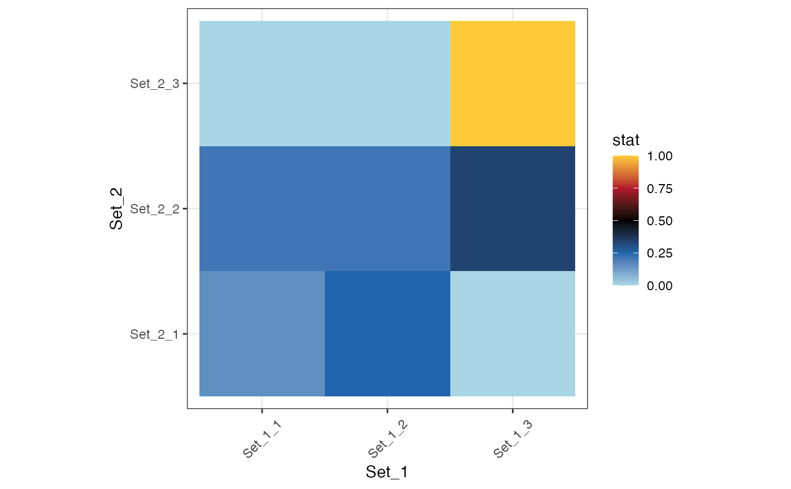
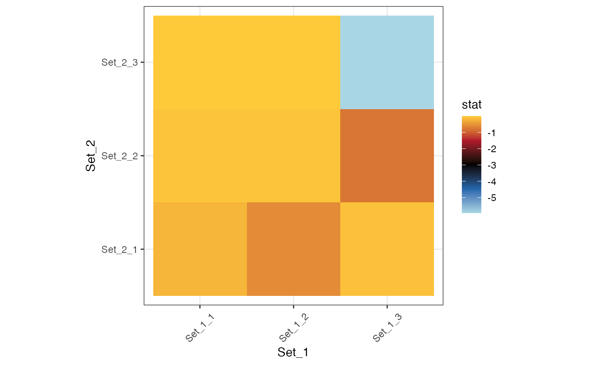
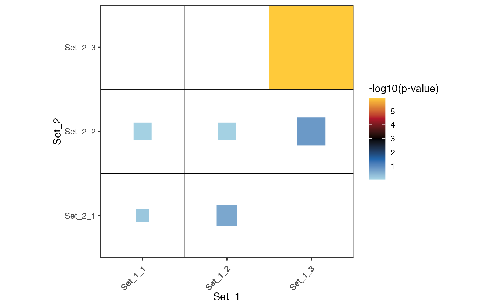

This function plots the results of compare_genesets.
plot_cmp_genesets(
set_1 = NULL,
set_2 = NULL,
stat = c("jaccard", "hypergeom", "intersection", "union", "size_set_1", "size_set_2",
"diff_set_1", "diff_set_2"),
transform = c("None", "log10", "log2", "-log10", "-log2"),
colors = colors_for_gradient("Ju1"),
layout = c("raster", "square"),
background = NULL,
coord_equal = TRUE
)A list containing gene sets to be compared.
A list containing gene sets to be compared.
The statistics to be computed between gene sets. It can be either "jaccard", "hypergeom", "intersection" "size_set_1", "size_set_2", "diff_set_1" (specific to set_1), "diff_set_2" (specific to set_2). The background is taken into account. Note that hypergeometric tests check for enrichment.
The transformation to be applied to the values. It can be either "NA", "log10", or "log2", "-log10", "-log2.
The color palette to be used in the plot.
The type of diagram. Either "raster" (a scatter plot showing the statistics of interest) or "square". The "square" layout shows the hypergeometric pvalue (color) and the Jaccard result (size of the square).
The background (universe) to consider. Default to the non-redundant list of elements merged from set_1 and set2. You may provide a vector with all genes of the genome for instance.
make sure that the an equal length on both axis represents the same change in units
A ggplot object representing the comparison results.
see compare_genesets.
set.seed(123)
set_1 <- list(letters[1:10], letters[11:20], letters[21:30])
x <- sample(letters[1:30])
set_2 <- list(x[1:5], x[6:20], letters[21:30])
res <- compare_genesets(set_1, set_2, stat = "jaccard")
#> |-- INFO : Computing background from the union of set_1 and set_2.
plot_cmp_genesets(set_1, set_2, stat = "jaccard")
#> |-- INFO : Using transformation: None
#> |-- INFO : Computing background from the union of set_1 and set_2.

plot_cmp_genesets(set_1, set_2, stat = "hypergeom", transform = "log10")
#> |-- INFO : Using transformation: log10
#> |-- INFO : Computing background from the union of set_1 and set_2.
#> |-- INFO : Ceiling pvalue to 1e-320 (R limit).

plot_cmp_genesets(set_1, set_2, layout="square", transform = "-log10")
#> |-- INFO : Using transformation: -log10
#> |-- INFO : Computing background from the union of set_1 and set_2.
#> |-- INFO : Ceiling pvalue to 1e-320 (R limit).
#> |-- INFO : Computing background from the union of set_1 and set_2.
